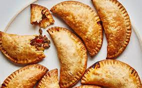

Description
An empanada is a stuffed bread or pastry baked or fried in many countries of Latin America and the south of Europe.
The name comes from the verb empanar, meaning to wrap or coat in bread.
Empanadas are made by folding a dough or bread patty around the stuffing.
Ingredients
- Pie Crust
- Chicken
- Peppers
- Assorted Seasonings
- Egg
- cheese
Steps
- Grill chicken and shred it
- cook peppers with seasoning and mix with chicken
- cut pie crust into circles
- put filling on a little less than half of the pie crust
- fold over pie crust and use fork to crimp edges of emphanada
- cover with egg wash and put in oven for 30 minutes